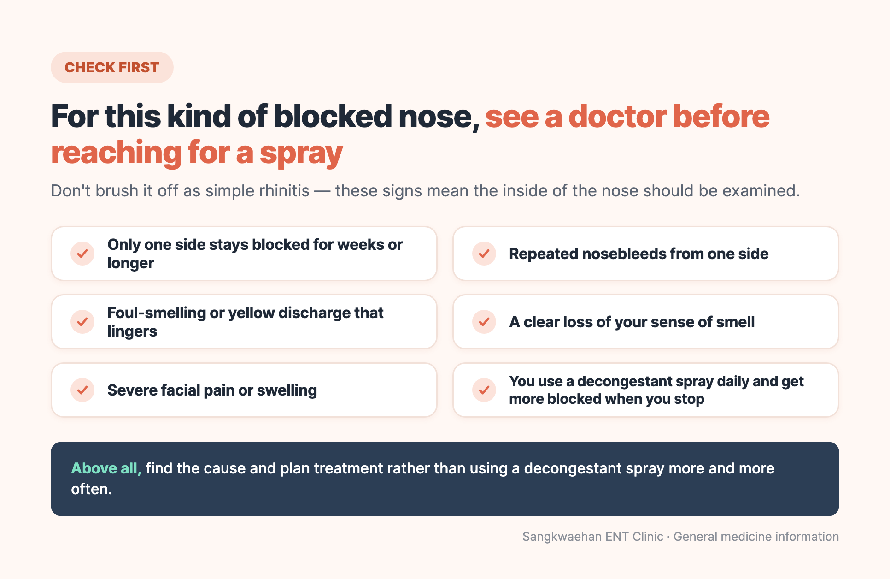
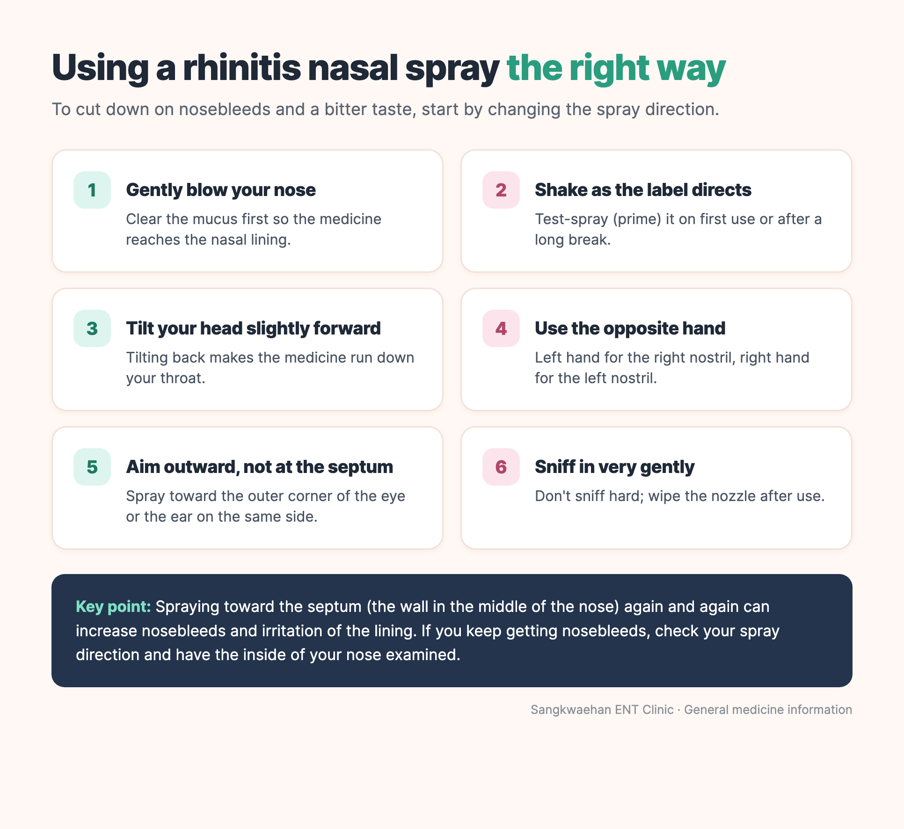

"My nose is so blocked — I want it open right now."
"The decongestant spray works instantly. Is it OK to keep using it?"
"What's the difference between all these nasal sprays?"
These are some of the most common questions in our clinic. Many patients assume all nasal sprays are basically the same medicine. They are all sprayed into the nose, but their ingredients and purposes are quite different.
- Decongestant sprays (e.g. xylometazoline) open a blocked nose fast, but are for short-term relief only.
- Steroid nasal sprays (e.g. fluticasone furoate, mometasone furoate) steadily control the inflammation of rhinitis and need to be used every day.
- Combination sprays: one antihistamine–steroid combination discussed here contains azelastine and fluticasone propionate.
- Blockage on one side only that lasts for weeks
- Repeated nosebleeds, especially from one side
- Foul-smelling or persistent yellow discharge
- A clear loss of smell
- Severe facial pain or swelling
- Daily use of a decongestant spray, with worse blockage when you stop
Seek urgent medical care for swelling around the eye, visual changes, severe headache or neurological symptoms.

In this article 10 sections · 10 min read
- 1. Find the cause of the blockage first
- 2. The four main types of nasal spray
- 3. Comparing the main sprays
- 4. Why decongestants work instantly — and why overuse makes things worse
- 5. Why steroid sprays need to be used daily
- 6. When is a combination spray considered?
- 7. How to use a nasal spray: direction matters
- 8. Blocked when lying down, at night, or on one side
- 9. What does an ENT check when blockage keeps coming back?
- Summary
1. Find the cause of the blockage first
Nasal congestion is not only caused by allergies:
- Swollen nasal lining from a cold or acute rhinitis
- Allergic rhinitis, with sneezing, clear runny nose and itching
- Sinusitis, with yellow discharge, postnasal drip and facial pain
- A narrow nasal structure such as a deviated septum or enlarged turbinates
- Nasal polyps, or long-term use of decongestant sprays
If the cause is different but you keep using the same spray, it may not work well — or may even make the blockage worse.
2. The four main types of nasal spray
Saline sprays and rinses
They wash out mucus and allergens and keep the lining moist. Most contain no medication. They are a helpful addition but do not fully replace other rhinitis treatments.
Steroid nasal sprays
Fluticasone furoate and mometasone furoate sprays belong here. They reduce allergic inflammation and help control blockage, runny nose, sneezing and itching together. They do not open the nose instantly — regular daily use is needed for the full effect. The 2025 ARIA-EAACI guideline makes a conditional recommendation (moderate certainty) to prefer intranasal steroids over intranasal antihistamines alone for allergic rhinitis.[1][7]
Antihistamine + steroid combination sprays
These contain azelastine (which reduces the allergic reaction) and fluticasone propionate (which controls inflammation). ARIA-EAACI recommends them for patients not adequately controlled by a steroid spray alone, taking into account severity, cost, preference and adherence.[1][4]
Topical decongestants
Xylometazoline 0.1% is a typical example. It constricts blood vessels in the swollen lining and can relieve blockage within minutes. It works fast, but does not treat allergic inflammation, and prolonged use can cause rebound congestion and rhinitis medicamentosa.[5][6]
3. Comparing the main sprays
Fluticasone furoate nasal spray (prescription steroid)
- Role: controls blockage, runny nose, sneezing and itching in allergic rhinitis
- Onset: according to the Korean label, significant improvement has been reported within 24 hours for seasonal and within 4 days for year-round allergic rhinitis; the full effect may take several more days
- Use: approved in Korea from age 2. Use regularly as prescribed. Do not change the dose or combine prescription sprays without medical advice.
- Common side effects: headache, nosebleeds, dryness, irritation
Note: fluticasone furoate and the fluticasone propionate in combination sprays are different preparations.[2]
Mometasone furoate nasal spray (prescription steroid)
- Role: controls inflammation and nasal symptoms of allergic rhinitis; some products are also approved for nasal polyps in adults. Some mometasone products are approved for acute rhinosinusitis in adults and adolescents aged 12 years and older without severe bacterial infection.
- Onset: some people notice improvement within 12 hours of the first dose, but the full effect takes from several days to 1–2 weeks
- Use: for allergic rhinitis, approved in Korea from age 2. Use regularly as prescribed. Do not change the dose or combine prescription sprays without medical advice. Several products exist, so check the leaflet of the one you were given for age, indications and number of sprays
- Common side effects: nosebleeds, dryness, irritation, headache
The two steroid sprays above have a similar purpose. Neither is "better" for everyone; the choice depends on how the spray feels, smell, dosing frequency, age, whether polyps or sinusitis are present, and how you responded before.[1][3]
Azelastine + fluticasone propionate combination spray (prescription)
- Role: controls moderate-to-severe seasonal and year-round allergic rhinitis
- Onset: because it contains an antihistamine, relief may come somewhat faster than with a steroid spray alone, though this varies
- Use: Use regularly as prescribed. Do not change the dose or combine prescription sprays without medical advice.
- Common side effects: nosebleeds (very common), headache, bitter or unpleasant taste or smell, and occasionally drowsiness or dizziness
This is not an antihistamine-only spray — it contains a steroid as well, so it should not be combined with another steroid spray on your own. Approved ages, indications and pregnancy or breastfeeding restrictions vary by product and country. Follow the Korean-approved leaflet for the exact product prescribed, and tell your doctor if you are pregnant or breastfeeding.[4]
Xylometazoline 0.1% spray (over-the-counter decongestant)
- Role: temporary relief of blockage from colds, allergic rhinitis or sinusitis
- Onset: within minutes
- Use: The Korean product label reviewed for this article specifies use from age 12, with at least 8 hours between doses and no more than 3 applications daily. Other products and countries may differ. Use only briefly and follow your own leaflet.
- Common side effects: dryness, burning, nosebleeds, headache, palpitations
Products in the same brand family can differ — for example, saline-type baby products contain different ingredients and target different ages. Do not assume they are used the same way just because the name is similar.[5]
4. Why decongestants work instantly — and why overuse makes things worse
Xylometazoline rapidly constricts blood vessels in the nasal lining, which is why it feels like it "opens the nose" much faster than a steroid spray. The problem is repeated use. Used for longer than recommended, the lining swells up again as each dose wears off (rebound congestion). If this is mistaken for worsening rhinitis and you spray more often, it can lead to drug-induced rhinitis.
How short is "short-term"?
- Korean product information: do not use for more than 7 consecutive days without medical advice.[5]
- In April 2026, the UK MHRA shortened the maximum duration for xylometazoline and oxymetazoline sprays from 7 to 5 days, because reports of rebound congestion continued.[6]
- ARIA-EAACI conditionally advises against use for longer than 5 days, based on very-low-certainty evidence. Use these medicines for the shortest necessary time and do not exceed the maximum duration on your product label or the advice of your clinician.[1]
In practice, it is safest to aim for 3–5 days or less. If you are already using it every day and your nose gets worse when you stop, don't keep increasing the dose — see a doctor.
Can I use a decongestant together with a steroid spray?
ARIA-EAACI does not recommend routinely adding a decongestant to a steroid spray, because it adds side-effect risk without adding benefit (conditional recommendation).[1] In specific situations, a doctor may combine them for a short period of less than 5 days.
Who should not use decongestant sprays, or should ask first
- Do not use: angle-closure glaucoma, enlarged prostate, pheochromocytoma, currently taking (or stopped within 2 weeks) an MAO-inhibitor antidepressant, under age 12 (for the 0.1% product)
- Ask a doctor or pharmacist first: high blood pressure, heart disease including arrhythmia, diabetes, thyroid disease, pregnancy or breastfeeding[5][6]
5. Why steroid sprays need to be used daily
Steroid sprays do not shrink blood vessels on the spot; they calm the allergic inflammation in the nasal lining. They work better when used regularly as prescribed than only on bad days. Stopping after a few days because "it didn't open my nose straight away" may mean stopping before it has had a chance to work.
Steroid nasal sprays do not cause the rebound-congestion cycle associated with overusing topical decongestants. Some people become reliant on decongestant sprays because congestion returns as the effect wears off.
Steroid sprays are not free of side effects, though. Nosebleeds and irritation can occur; children on long-term treatment should use the lowest effective dose with growth monitored; and anyone with glaucoma, raised eye pressure, cataracts or blurred vision should discuss it with their doctor.[2][3]
6. When is a combination spray considered?
When sneezing, clear runny nose, itching and blockage are all severe, or a steroid spray alone isn't enough. Some people notice a bitter taste from the antihistamine — sniffing hard pulls the medicine down the throat and makes it worse, so keep your head slightly forward and breathe in gently. Drowsiness or dizziness are uncommon, but be careful driving or operating machinery until you know how you react, and check with your doctor about alcohol or sedating medicines.[4]
7. How to use a nasal spray: direction matters

- Blow your nose gently.
- Shake suspension sprays (steroid and combination sprays) as directed. Prime the pump as per the leaflet if it is new or hasn't been used for a while.
- Tilt your head slightly forward, not back.
- Use your left hand for the right nostril and your right hand for the left nostril. This naturally aims the nozzle toward the outer side of the nose (toward the corner of your eye or your ear), away from the septum in the middle.
- Spray while breathing in very gently. Sniffing hard sends the medicine to your throat.
- Wipe the nozzle and replace the cap. Don't unblock the nozzle with a pin — follow the cleaning instructions.
Spraying repeatedly toward the septum increases the risk of nosebleeds and damage to the lining. If you keep getting nosebleeds, have your technique, dose and the inside of your nose checked.[8]
8. Blocked when lying down, at night, or on one side
Congestion that gets worse at night or when lying down may involve swollen turbinates from rhinitis, a deviated septum, or changes in sleeping position. If you also snore, breathe through your mouth or wake often, it is worth checking for a sleep-breathing problem rather than just relieving the blockage for a while.
One-sided blockage that lasts for weeks (not just during a cold) needs evaluation for structural problems, polyps or sinusitis. Don't delay if you also have one-sided nosebleeds or foul-smelling discharge.
9. What does an ENT check when blockage keeps coming back?
Symptoms alone cannot always tell the causes apart. At an ENT clinic, a nasal endoscope is used to look at the septum, turbinate swelling, discharge and polyps, and further tests are considered only when clinically indicated; sinus imaging is not routine for uncomplicated rhinitis. If snoring, mouth breathing and daytime sleepiness are present, we also consider whether a sleep-breathing evaluation is needed.
If your congestion keeps returning, or you find it hard to stop using a decongestant, bring the sprays you are using to your appointment. Knowing the product, how often and how long you've used it helps us find the cause.
Summary
- Decongestant sprays are fast, but keep use short (3–5 days or less).
- Steroid sprays are used steadily every day.
- One antihistamine–steroid combination discussed here contains azelastine and fluticasone propionate.
- Long-term, self-directed use of a steroid spray plus a decongestant is not recommended; a doctor may combine them briefly (under 5 days) in specific cases.[1]
- Aim the spray outward, away from the septum.
- One-sided blockage, repeated nosebleeds, loss of smell or foul discharge need an examination.
The spray that clears your nose fastest is not always the right treatment. Find the cause first, then use the spray that fits it — correctly, and for the right length of time.
References
- Sousa-Pinto B, Bousquet J, et al. Allergic Rhinitis and Its Impact on Asthma (ARIA)-EAACI Guidelines—2024–2025 Revision: Part I—Guidelines on Intranasal Treatments. Allergy. 2025. doi:10.1111/all.70131
- Korean Ministry of Food and Drug Safety (MFDS) drug information system — fluticasone furoate nasal spray, approved label (Korean). nedrug.mfds.go.kr
- Korea Pharmaceutical Information Center — mometasone furoate nasal spray drug information (Korean). health.kr
- MFDS drug information system — azelastine hydrochloride / fluticasone propionate nasal spray, approved label (Korean). nedrug.mfds.go.kr
- Korea Pharmaceutical Information Center — xylometazoline hydrochloride 0.1% spray drug information (Korean). health.kr
- MHRA. Nasal decongestant sprays and drops containing xylometazoline/oxymetazoline: increased risk of rebound congestion, rhinitis medicamentosa, and tachyphylaxis with overuse. 2026. gov.uk
- Wise SK, et al. International consensus statement on allergy and rhinology: Allergic rhinitis – 2023. Int Forum Allergy Rhinol. 2023;13(4):293–859. doi:10.1002/alr.23090
- BSACI. Nasal corticosteroid spray technique — Standard Operating Procedure. 2023. bsaci.org
This article is an English adaptation of a Korean post by Dr. OH JUNGHO. It is general health information, not a diagnosis or treatment plan for any individual. Results and suitability of any test or treatment differ from person to person — please consult a doctor about your own situation.